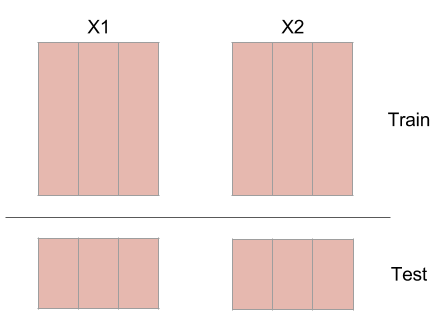

Predict¶
At the heart of convergent cross mapping is the k-nearest neighbors algorithm. In fact, the package uses scikit-learn’s nearest neighbor implementation for efficient calculation of distances and to retrieve the indices of the nearest neighbors. It is a good idea to understand the k-nearest neighbor algorithm before interpreting what this package implements.
Training and Testing¶
Before making predictions, split the embedded time series into a testing set and a training set. This protects against highly autocorrelated time series. For example, random walk time series can seem like they are coupled if they are not split into a training set and testing set.
The code for this is done with a function in skccm.utilities.
from skccm.utilities import train_test_split
#split the embedded time series
x1tr, x1te, x2tr, x2te = train_test_split(X1,X2, percent=.75)
The code above uses the first 75% as the training set (to rebuild the shadow manifolds) and uses the last 25% as the testing set.
Distance Calculation¶
At this point, you will have these four embedded time series:
- X1tr
- X1te
- X2tr
- X2te
The distance is calculated from every sample in X1te to every sample in X1tr. The same is then done for X2tr and X2te. The distances are then sorted and the closest \(k\) indices are kept to make a prediction in the next step. \(k\) is the embedding dimension plus 1. So if your embedding dimension was three, then the amount of near neighbors used to make a prediction will be four.
Weighted Average¶
The next step is to use the near neighbor indices and weights to make a prediction about the other time series. The indices that were found by calculating the distance from every sample in X1te to every sample in X1tr, are used on X2tr to make a prediction about X2te. This seems a little counterintuitive, but it is expected that if one time series influences the other, the system being forced should be in a similar state when the system doing the forcing is in a certain configuration.

Notice the distances and indices have the same number of samples as the testing set, but an extra dimension. This is because you need \(K+1\) near neighbors in order to surround a point.
Library Length¶
A prediction is made for multiple library lengths. As the library length is increased, the prediction skill should converge. By increasing the library length, the density of the rebuilt attractor is increasing. As that attractor becomes more and more populated, better predictions should be able to be made.